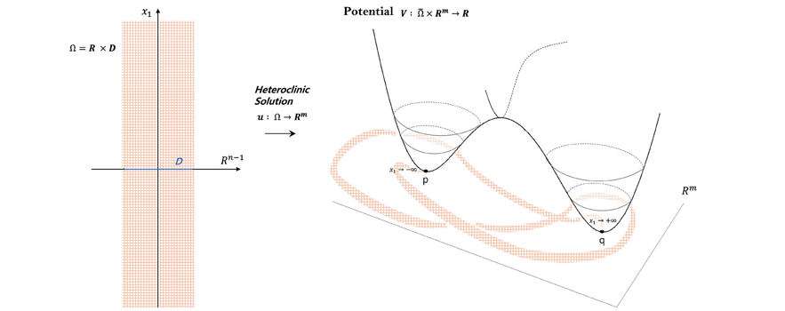

연구성과 10선
연구성과 10선
KAIST RESEARCH ACHIEVEMENTS
이중 안정점을 가진 포텐셜계
수리과학과 변재형
요약
Potential V 가 Rn에서 두 개의 최소점 p, q 를 가질 경우 상미방계의 일반화된 형태인 elliptic system Δu(x)-Vu(x,u(x)))=0, x∈R×Ω⊂Rm, u(x) = p for x1 = -∞, u(x) = q for x1 = ∞을 만족하는 heteroclinic solution u 의 존재성은 역학계 연구에서 아주 근본적인 질문이다. 우선 가장 기본적인 heteroclinic solution 의 존재성을 이전의 결과들을 가장 일반적으로 확장하는 potential 에 대한 최적의 조건하에서 heteroclinic solution 의 존재를 증명하였다. scalar case 에서는 임의의 shadowing chains 에 대응하는 해의 존재에 필요충분조건이 gap condition 으로 알려져 있다. systems 의 경우 이에 대응하는 isolatedness condition 을 찾고 이 경우 임의의 shadowing chains 에 대응하는 해의 존재, 즉 해의 집합의 chaotic 구조를 증명하였다.
연구배경
단진자 운동을 보면 세가지 형태의 해가 존재 하는데, 첫째는 주기해, 둘째는 평형점에서 평형점 까지 무한시간동안 움직이는 해(homoclinic 또는 heteroclini soutions), 셋째는 회전운동을 하는 해이다. 단진자 운동을 나타내는 potential 은 sine 함수로 주어지고 하나의 방정식으로 기술된다. 이때의 존재성과 해의 성질은 아주 간단한 phase plane analysis 를 통하여 알 수 있다.
이에 비해 여러 방정식들이 potential 을 통하여 연결되어 있고, 더 일반적으로 편미분방정식계를 생각하면 존재성의 증명은 아주 까다로운 문제가 된다. 세가지 형태의 해의 구성을 위하여 서로 다른 수 많은 연구와 방법론이 개발되어 왔다. 본 연구는 평형점을 연결하는 heteroclinic 또는 homoclinic solutions 에 대한 연구를 진행하였다.

연구내용
다음 n 계 편미분방정식을 생각한다. Δu(x)-Vu(x,u(x)))=0, x∈R×Ω⊂Rm, u(x) = p for x1 = -∞, u(x) = q for x1 = ∞ m = 1 인상미분방정식계의 경우 potential 이 무한대와 p, q 와 다른 점들에서 최소값 V(p)=V(q) 보다 크고 두 최소점 p, q 근처에서의 potential의 적당한 비퇴화적인 조건하에서 해의 존재성이 알려져 있었다. 본 연구에서는 최소점 근처에서의 비퇴화성 조건없이 위 편미분방정식에 대하여 해의 존재를 보일 수 있었다. 또한 2015년 Journal of the European Mathematical Society 에 발표된 논문에서 Alikakos-Fusco 는 potential 아주 특수한 local condition(ball shape basin with two wells)을 만족할 경우 local version 으로서 heteroclinic solution 의 존재를 증명하였는데 이를 확장하여 아주 일반적인 potential 에 대한 local condition(convex basin with two wells)하에서 존재증명을 하였다. 이때 Alikakos-Fusco 의 조건인 최소점 근처에서의 비퇴화성의 가정 없이 보일 수 있었다. scalar case 에서는 임의의 shadowing chains 에 대응하는 해의 존재에 필요충분조건이 building block solutions 들의 gap condition 으로 잘 알려져 있다. systems 의 경우 gap condition 을 일반화하는 isolatedness condition 을 찾고 이 조건이 만족할 경우 임의의 shadowing chains 에 대응하는 해의 존재를 증명하였다. 이는 해의 집합이 아주 chaotic 구조를 가지는 것을 보이는 것으로 이 방정식에 대한 최초의 결과이다.
기대효과
- 해를 가장 일반적인 조건하에 증명하는 것은 그 결과 자체도 의미가 있지만 그 증명 방법은 다양한 문제에 응용할 수 있을 것으로 기대한다. 실제로 편미분 방정식을 포함한 다양한 문제가 무한 차원공간위의 상미분 방정식으로 표현할 수 있는데 본 논문의 결과와 방법론을 무한차원으로 확장하여 보다 일반적인 결과를 얻을 수 있을 것으로 기대한다.
연구성과
[논문] Jaeyoung Byeon, Piero Monttechiari and Paul Rabnowitz, A double well potential system, Analysis and PDE, 9(2016), 1737-1772